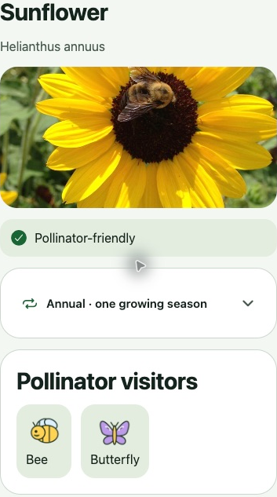

03 · Make a connection
Who might visit
this flower?
Sunflower›Pollinator visitors
Read the visitor list, then turn it into a question.
1. Find Pollinator visitors
Sunflower lists Bee and Butterfly.
2. Make a prediction
“Which visitor might I notice near this plant?”
3. Keep evidence separate
A listed visitor is not a sighting you recorded.

MeetConnectReturnCare
Study guide · practice here is not saved in the app
Try it in Plantopedia
Search plants → Sunflower → Pollinator visitors
- Name one listed visitor and one feature of the flower.
- Observe from a safe distance, if you have permission. Record what you actually see—even no visitors.
If a bee lands on a flower, have I proved pollination happened?
No. A visit may move pollen, but a brief look does not prove successful pollination or seed production.